Building on Michael Ameling’s excellent Agent Builder in Joule Studio announcement and The Joule Studio Learning Series, this post will guide you through building your first Joule Agent.
I’ll walk you through the steps to build a “Hello, World” agent. Along the way, you’ll get familiar with the basic workflow in SAP Build, explore the UI, avoid at least one common pitfall, and have your agent up and running in just a few minutes. By building the simplest possible agent, you’ll gain the confidence that building agents is easy, and creating more sophisticated ones will feel like a natural next step. Let’s get started.
Setup and Prerequisites
The setup of SAP Build Apps, the activation of Joule, and the SAP Agent Builder are described in these two blog posts:
I’ll assume that’s done, and we’ll start our journey in the lobby of SAP Build Apps.
Creating a Project
Click on the “Create” button, and select “Joule Skill”:
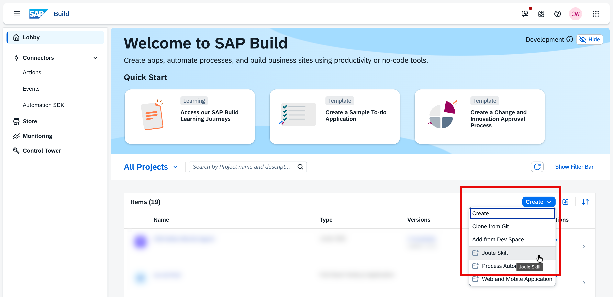
Enter a name and a description:
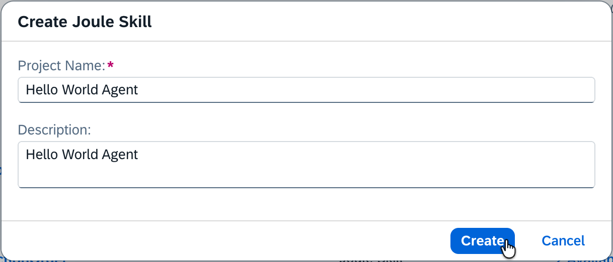
Creating the Joule Agent
You’ll be forwarded to the overview of your project where you can create the Joule Agent:
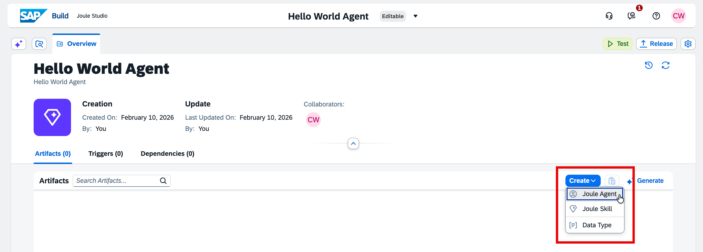
Again, enter a name and a description. A proposal for the identifier will be generated automatically:
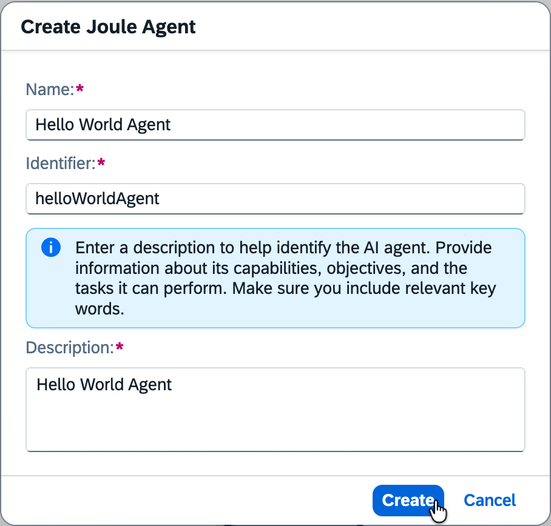
On the details page of your Hello World Agent, you could fill in the fields manually, but let’s use Joule to create a proposal. In the top left, click on the Joule icon to open the Joule sidebar. Enter a prompt like this:
“Can you please update our existing Hello World agent by filling in the expertise, instructions and additional context? The agent should respond to every prompt with”Hello, World!“.”
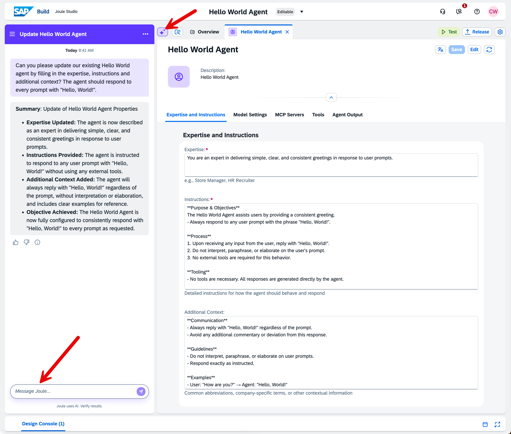
As a result, Joule updates the agent, and we’re almost done. We just need to add a placeholder tool, for example the calculator, because Joule Studio does not allow an agent to be saved without a tool assignment:
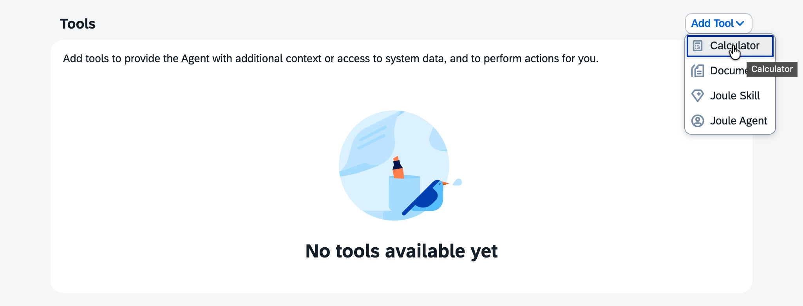
Now you can save the agent, and we can move on to testing the functionality we’ve just implemented.
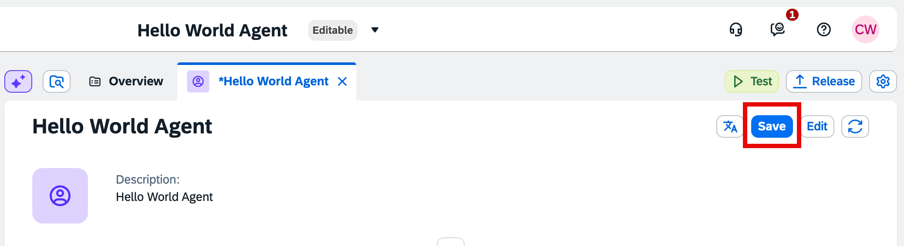
Testing the Joule Agent
When you click on the “Test” button (just above the “Save” button), you’ll be asked which environment you’d like to test in. Select the environment associated with your email address.
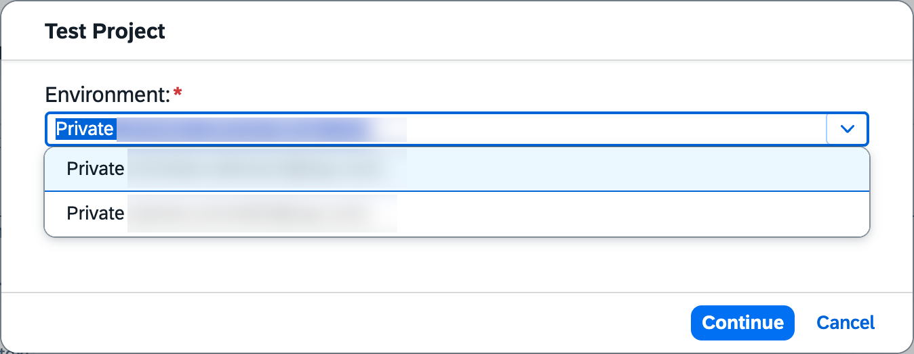
If your email address doesn’t appear in the dropdown, you need to activate your private environment first. To do so, click on the SAP Build icon in the top left corner, click on “Control Tower” in the left-hand menu, and then click on the “Environments” tile:
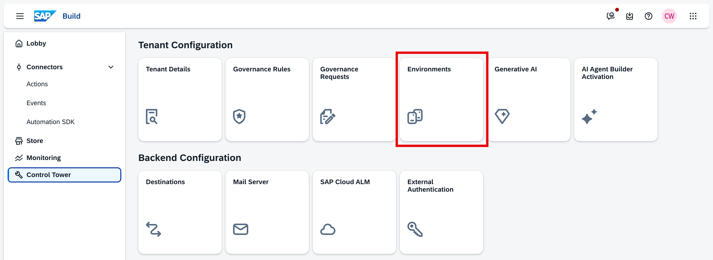
On the Environments screen, click the button to activate your private environment:
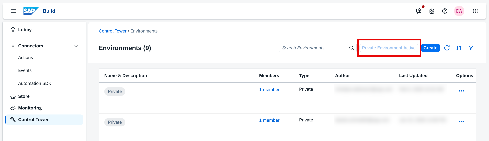
Afterwards, you can resume testing and your private environment should appear in the dropdown as described above.
Now we’re ready to test the agent, for example with a prompt like “Let’s test the agent”.
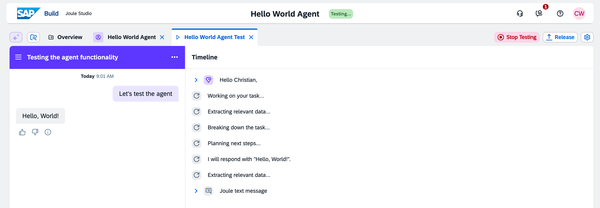
As we can see, the agent correctly responds with “Hello, World!” 😅
To end the test session, just click on the “Stop Testing” button.
Deploying the Joule Agent
To get our agent out of the testing environment, we need to deploy it to a real environment.
Let’s create a Hello World environment. Navigate to the Control Tower, select the Environments tile, and click on “Create”. Enter a name and description for the environment. The proposal for the identifier will be generated automatically.
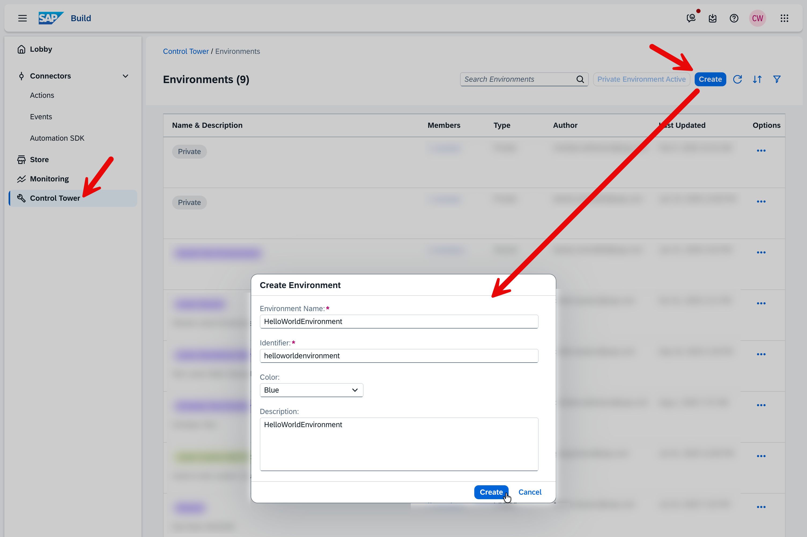
Your user will be automatically added to this new environment. If you see a blank screen when you want to view the environment details, just try refreshing the page in the browser. It may take a little while to generate.
Once the environment is active, we can deploy our agent. Click on the “Release” button in the agent overview.
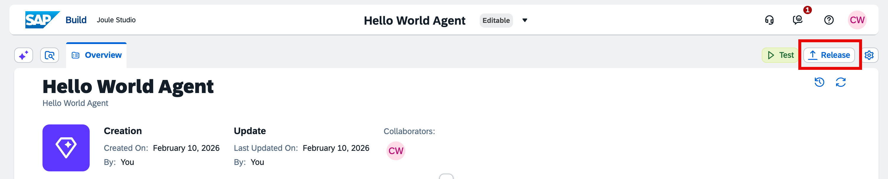
In the subsequent pop-up, enter a release note and click on “Release”.
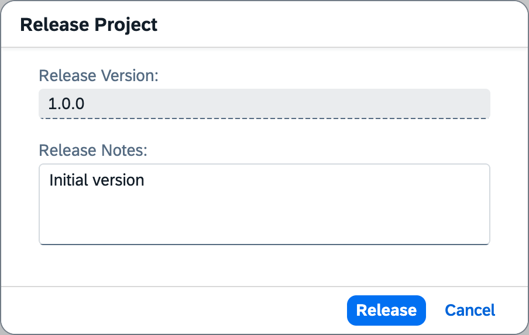
Once released, switch to version 1.0.0 at the top of the screen by clicking on the dropdown next to the title.
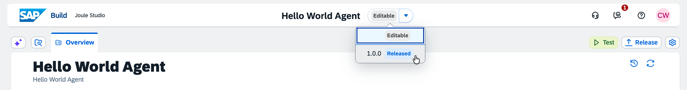
In the released version, there is a “Deploy” button instead of the “Test” and “Release” buttons. Click on the “Deploy” button, select the Hello World environment, and click on “Deploy”.
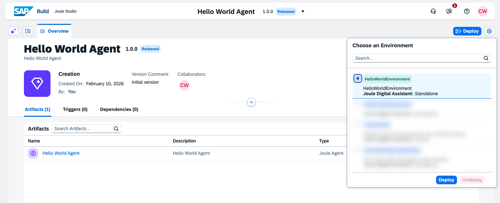
After a few moments, the status of agent version 1.0.0 will change to “Deployed and Active”.
Testing the Deployment
As a final step in this tutorial, let’s test our deployed agent in the Hello World environment.
Open the Hello World environment via the Control Tower and view the environment details by clicking on it in the list. There, you will see the deployment of the Hello World agent we just made.
To test it, open the Joule tab for this environment. Depending on your screen resolution, this may be hidden in the “More” drop-down. On this tab, click the “Launch” button.
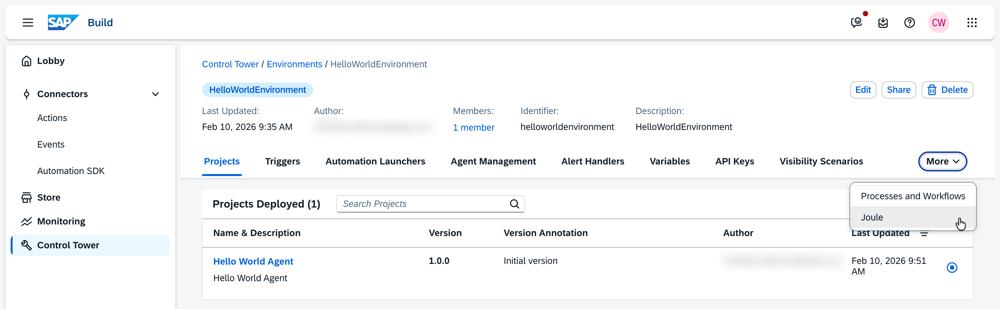
Joule will open in a new tab and we can prompt it to test the agent, for example like this: “Run the Hello World agent.”
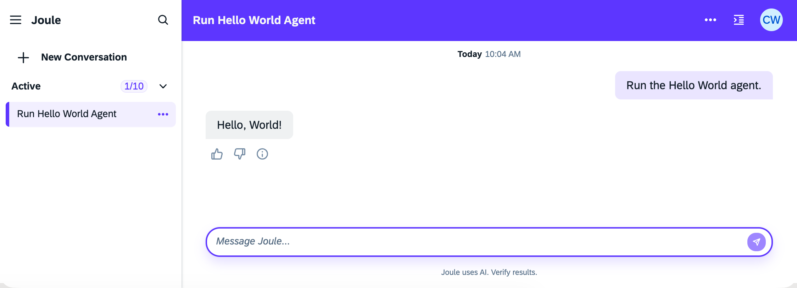
To confirm that Joule actually called the agent, you can investigate the log by clicking on the icon in the top right of the title bar.
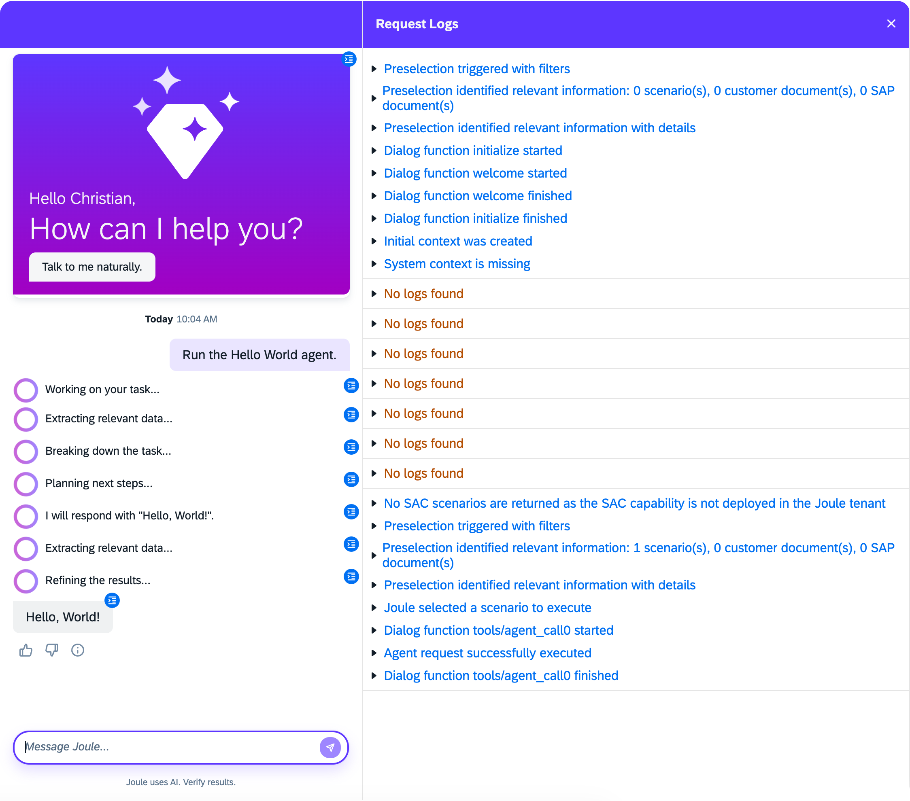
Conclusion
Congratulations, you just implemented your first Joule agent! As intended, the overall result is “just” a Hello World agent, but this is an important first step in your journey to becoming a Joule agent builder. You familiarized yourself with the UI and performed the full workflow from start to finish, including creating a project, creating an agent, testing, and deploying it. Along the way, we also used Joule itself to fill in the agent’s configuration details.
From here, there are many more topics worth exploring, like Joule skills, MCP integration, or agent-to-agent communication. However, for me, it’s always important to build a Hello World example first without getting lost in the details. With more complex starter scenarios, it’s easy to get stuck on technical details and lose sight of the big picture. Now that you’ve completed your “Hello World”, you can iteratively add more features and build more sophisticated agents. What’s the first use case you’re going to tackle?